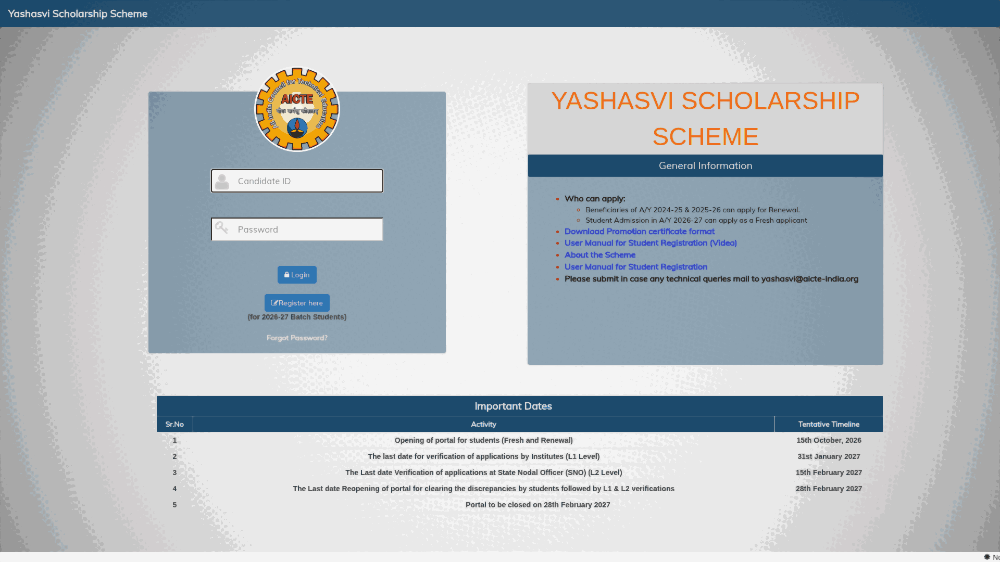

AICTE Yashasvi Scholarship 2026-27: up to ₹50,000 a year for core engineering students
AICTE's Yashasvi scholarship portal is live for 2026-27 at yashasvi.aicte.gov.in. The scheme supports first-year degree and diploma students in core engineering branches with ₹50,000 a year for degree courses and ₹30,000 a year for diploma courses, where family income is up to ₹8 lakh. There are 5,200 scholarships across India, distributed state-wise; Kerala's share is 74 degree and 55 diploma slots. Applications opened on 15 October 2026 and the portal stays open until 28 February 2027, with institute verification closing on 31 January 2027.
At a glance
- What: AICTE Yashasvi (Young Achievers' Scholarship and Holistic Academic Skills Venture Initiative) for 2026-27, fresh and renewal
- Who gives it: All India Council for Technical Education (AICTE)
- Amount: ₹50,000 per year for degree students, ₹30,000 per year for diploma students, paid by direct benefit transfer
- Who can apply: first-year students in core engineering branches at AICTE-approved institutions, family income up to ₹8 lakh a year
- How many: 5,200 scholarships - 2,593 degree and 2,607 diploma, shared state-wise; every state gets at least 10
- Kerala: 74 degree slots and 55 diploma slots
- Where: yashasvi.aicte.gov.in (not the National Scholarship Portal)
What it pays
From the official AICTE scheme guidelines:
- Degree: ₹50,000 per annum for every year of study, up to 4 years for students admitted in the first year and 3 years for lateral entry students.
- Diploma: ₹30,000 per annum for every year of study, up to 3 years for first-year admits and 2 years for lateral entry.
- Payment is once a year through DBT to the student's bank account after selection.
Who can apply
- Students admitted to the first year of a degree or diploma course in a core engineering branch at an AICTE-approved institution in 2026-27. The guidelines name Civil, Chemical, Electrical, Electronics and Communication, Mechanical, Agriculture Engineering and Textile Technology as core branches.
- Family income from all sources not more than ₹8 lakh per annum in the current financial year; a valid income certificate issued by the state or UT government must be enclosed.
- The gap between passing the qualifying exam and taking admission should not be more than two years.
- Lateral entry students (joining degree second year after a diploma) can also apply; their slots are limited to 10% of each state's degree allocation.
- Renewal is open to beneficiaries of 2024-25 and 2025-26 who submit their passing marksheet and a letter from the head of the institution on the portal.
- Reservation is as per Government of India norms.
How selection works
- Purely on the merit of the qualifying examination: class 12 marks for degree applicants and class 10 marks for diploma applicants. There is no separate entrance test.
- State and UT-wise merit lists are prepared against each state's slot allocation.
- Ties are broken by class 10 percentage (for degree applicants), then by age, with the elder candidate ranked higher. CGPA is converted to percentage by multiplying by 9.5.
- AICTE uploads a provisional shortlist on its web portal; grievances about the merit list can be raised within one month of publishing.
Important dates on the portal
Checked on yashasvi.aicte.gov.in on 10 November 2026:
- Portal opened for fresh and renewal applications: 15 October 2026
- Last date for verification of applications by institutes (L1 level): 31 January 2027
- Last date for verification at State Nodal Officer level (L2): 15 February 2027
- Portal reopens for clearing discrepancies, followed by L1 and L2 verification, until: 28 February 2027
- Portal closes: 28 February 2027
Documents to keep ready
- Income certificate issued by the state or UT government, showing family income up to ₹8 lakh
- Class 12 marksheet (degree applicants) or class 10 marksheet (diploma applicants)
- Proof of admission to a first-year core branch course in an AICTE-approved institution for 2026-27
- Bank account details in the student's name for DBT
- Renewal applicants: latest passing marksheet and the promotion certificate or letter from the head of the institution; the portal has a downloadable promotion certificate format
How to apply
Checked on the live portal on 10 November 2026:
- Open yashasvi.aicte.gov.in and click "Register here (for 2026-27 Batch Students)".
- Register and check your email inbox and spam folder for the verification message, then log in with your candidate ID and password.
- Fill the application and upload the income certificate and marksheets.
- Submit and follow up with your institution: the college verifies your application online at L1 level, and the State Nodal Officer verifies at L2. Only verified applications are considered.
- Watch the portal for the provisional merit list; raise any grievance within one month of it being published.

Keep these limits in mind
- The portal lists verification dates but no separate last date for students to submit; apply well before your institute's verification closes on 31 January 2027 so the application does not sit unverified.
- You cannot hold any other scholarship, stipend, salary or financial assistance alongside Yashasvi; if you receive one, the scholarship is discontinued and the full amount must be refunded to AICTE.
- The scholarship is tied to core branches: if you shift to a non-core branch in a later year, you lose the scholarship and must refund the entire amount.
- Failing to get promoted to the next year forfeits the scholarship, and dropping out ends it.
- Only verified online applications count; incomplete applications are rejected. The merit list is prepared state-wise, so the cut-off depends on your state's applicants.
- We read the AICTE scheme guidelines and checked the live portal; we did not register, log in or submit an application, and nothing was paid.
Frequently asked questions
How much is the Yashasvi scholarship? ₹50,000 per year for degree students (up to 4 years) and ₹30,000 per year for diploma students (up to 3 years), paid annually by DBT.
Who is eligible? First-year degree or diploma students in core engineering branches at AICTE-approved institutions, with family income up to ₹8 lakh a year and a gap of no more than two years after the qualifying exam.
How many scholarships are there for Kerala? Kerala's allocation is 74 degree and 55 diploma scholarships, out of 5,200 across India, per the state-wise table in the AICTE guidelines.
What is the last date to apply? The portal does not state a separate student last date. It opened on 15 October 2026 and closes on 28 February 2027; institutes verify applications only until 31 January 2027, so apply well before that.
Is it on the National Scholarship Portal? No. Yashasvi has its own portal at yashasvi.aicte.gov.in. AICTE's Pragati, Saksham and Swanath scholarships are the ones on NSP.
Whom do I contact for help? yashasvi@aicte-india.org for technical queries; the portal lists this address on its home page.
Source: the AICTE students development schemes page, the AICTE Yashasvi scheme guidelines, and the live Yashasvi scholarship portal. Checked on the live pages on 10 November 2026. This is an AiCoN explainer, not an AICTE publication.